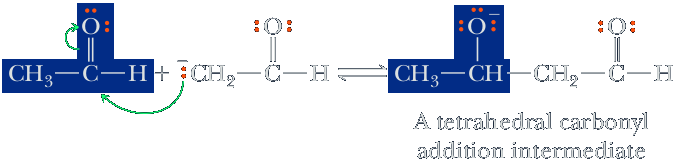
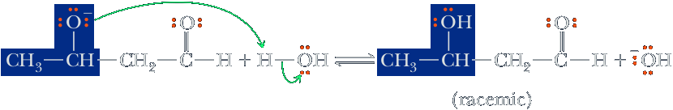
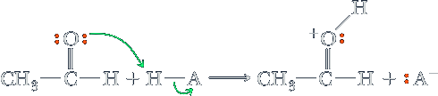
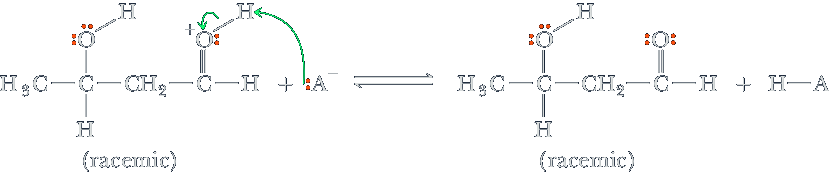

Aldol condensation
The aldol condensation is a self-condensation (addition reaction) of two molecules of aldehyde or ketone in the presence of a dilute base to yield an aldol, resulting in a β-hydroxy aldehyde or a β-hydroxy ketone. Subsequent dehydration produces an α,β-unsaturated aldehyde or ketone. The addition step without subsequent dehydration is an aldol reaction. Both the aldol and dehydration steps may be promoted by base or acid.

Another example is the self-condensation of propanone (acetone) to form 4-hydroxy-4-methylpentan-2-one (diacetone alcohol) and its dehydration product, 4-Methylpent-3-en-2-one (mesityl oxide) a α,β-unsaturated ketone:
| 2 |  Acetone Acetone | ⟶ | 4-hydroxy-4-methylpentan-2-one (diacetone alcohol) | ⟶ | 4-Methylpent-3-en-2-one (mesityl oxide) |
A crossed aldol condensation uses two different aldehyde and/or ketone reactants. Such reactions usually give a mixture of multiple condensation products, because there are two or more possible enolate nucleophiles, and two different carbonyl electrophiles. In this crossed aldol condensation reaction example, four condensation products are possible.
Mechanism - Base-Catalyzed Aldol Reaction
Step 1: Take a proton away. Removal of an a-hydrogen by base gives a resonancestabilized enolate anion.

Given the relative acidities of the two acids in this equilibrium, the position of this equilibrium lies considerably to the left.
Step 2: Make a new bond between a nucleophile and an electrophile. Nucleophilic addition of the enolate anion to the carbonyl carbon of another aldehyde (or ketone) gives a tetrahedral carbonyl addition intermediate.
Step 3: Add a proton. Reaction of the tetrahedral carbonyl addition intermediate with a proton donor gives the aldol product as a racemic mixture and generates a new base catalyst.
Mechanism Acid-Catalyzed Aldol Reaction
The mechanism of an acid-catalyzed aldol reaction involves three steps, the first two of which are preparation of the aldehyde or ketone for formation of the new carbon-carbon bond. The key step is attack of the enol of one molecule on the protonated carbonyl group of a second molecule.
Step 1: Keto-enol tautomerism. Keto and enol forms of one molecule of the aldehyde or ketone undergo acid-catalyzed equilibration.
 Acetaldehyde Acetaldehyde(keto form) | HA ⇌ | Acetaldehyde (enol form) Vinyl alcohol |
Step 2: Add a proton. Proton transfer from the acid, HA, to the carbonyl oxygen of a second molecule of aldehyde or ketone gives an oxonium ion.
Step 3: Make a new bond between a nucleophile and an electrophile. Attack by the enol of one molecule on the protonated carbonyl group of another molecule forms the new carbon-carbon bond.

Step 4: Take a proton away. Proton transfer to A− regenerates the acid catalyst and gives the racemic aldol product.
You might compare the mechanisms of the acid- and base-catalyzed aldol reactions. Under base catalysis, the carbon-carbon bond-forming step involves attack of an enolate anion (a nucleophile) on the uncharged carbonyl carbon (an electrophile) of a second molecule of the aldehyde or ketone. Under acid catalysis, it involves attack of the enol (a nucleophile) of one molecule on the protonated carbonyl group (an electrophile) of the second molecule.
It is quite common to create chiral products during aldol reactions, as well as in the other enolate reactions we discuss in this chapter. The products will be formed as racemic mixtures unless one of the reactants is chiral and present as a single enantiomer. In cases when two chiral centers are created in the reaction, four stereoisomers are produced as two 1:1 mixtures of enantiomers. A great deal of work has gone into learning how to carry out aldol and other enolate reactions that give predominantly a single enantiomer product, but that work is beyond the scope of this text.
Claisen-Schmidt condensation
A crossed aldol condensation involving an aldehyde or ketone enolate (as the nucleophile) with an aromatic carbonyl compound lacking an α-hydrogen (so no enolate can be formed), acting as the electrophile, is called a Claisen-Schmidt condensation. Formaldehyde cannot provide an enolate anion because it has no α-hydrogen, but it can function as a particularly good enolate anion acceptor because its carbonyl group is unhindered. Acetone forms an enolate anion, but its carbonyl group, which is bonded to two alkyl groups, is less reactive than that of formaldehyde. Consequently, the crossed aldol reaction between acetone and formaldehyde gives 4-hydroxy-2-butanone.
| + |  | NaOH ⇌ | 4-Hydroxy-2-butanone |
Aromatic aldehydes are incapable of enolization and cannot function as the nucleophilic component. Furthermore, dehydration is especially favorable because the resulting enone is conjugates with the aromatic ring.
Assuming all of the aldehyde or ketone is converted into its enolate, a Claisen-Schmidt condensation gives just one product (ignore possible E/Z alkene isomers) because only one enolate and only one electrophile are present. In the Claisen-Schmidt condensation shown here, acetone enolate is reacted with benzaldehyde to afford (E)-4-phenylbut-3-en-2-one as the only reaction product.
| Acetone | + |  Benzaldehyde Benzaldehyde | NaOH ⟶ | -4-Phenylbut-3-en-2-one.png) (E)-4-phenylbut-3-en-2-one (E)-4-phenylbut-3-en-2-one |